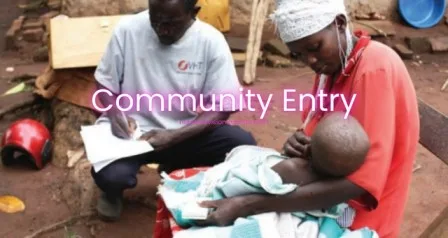

Expanded Nursing Uganda Explanation
Community Entry should be understood beyond a short definition. Link the concept to patient history, focused assessment, common risks, nursing priorities, documentation and evaluation of outcomes.
01 Community Entry
Community entry refers to the process of engaging and integrating into a specific community or local area in order to work collaboratively with its members.
A process where one gets to know the status of the community and learns how best one can help the community following the normal steps.
It involves establishing relationships, building trust, and understanding the social, cultural, and economic dynamics of the community. This follows Community Approach.
02 Steps involved in Community Entry.
1. Preliminary study of the community : Conduct a comprehensive study to gather information about the community’s location, population size, climate conditions, education levels, ethnicity, economic status, standard of living, occupations, and religious affiliations. This information will provide a foundation for understanding the community’s needs and priorities.
2. Contact the community leaders : Reach out to influential individuals in the community, such as local councilors (L.Cs) or community representatives(CORPS), to establish initial contact. Introduce yourself, explain the purpose of your engagement, and express your interest in working collaboratively with the community.
3. Sensitization meeting : Organize a sensitization meeting with key community leaders and stakeholders. During this meeting, present your intentions, objectives, and proposed initiatives to seek their commitment, support, and feedback. This helps to create awareness about your presence and builds a foundation for collaboration.
4. Identification of potential partners : Identify potential partners within the community who share similar objectives or have experience working on related issues. This could include local NGOs, community-based organizations, or government agencies. Collaborating with established partners increases the likelihood of success and ensures a more comprehensive approach to community development.
5. Design a social map of the community : Develop a social map of the community, which outlines the key institutions, organizations, and influential individuals within the community. This map acts as a guideline for navigating the community and understanding the social status and power structures at play.
03 Factors to Consider when entering a Community
1. Community Structures : Understand the existing community structures and institutions, such as local councils, community-based organizations, or traditional leadership systems. Engage with these structures to utilize their knowledge, networks, and resources for effective community entry and collaboration.
2. Proper Timing : Consider the timing of your entry into the community. Be aware of significant cultural or religious events, agricultural seasons, or any other factors that may affect community members’ availability or presence to new initiatives. Choosing an appropriate time enhances acceptance and engagement.
3. Appropriate Target : Clearly define your target audience or beneficiaries within the community. Identify the specific group or individuals who will benefit from your interventions or initiatives. Tailor your approach, messaging, and activities to meet their specific needs and aspirations.
4. Approach Methodologies : Determine the most suitable approach and methodologies for engaging with the community. This could include participatory methods, community mobilization, workshops, focus group discussions, or one-on-one interactions. Choose methods that facilitate active community participation, ensure inclusivity, and encourage meaningful engagement.
5. Resource Assessment : Assess the available resources within the community, including human resources, infrastructure, and local expertise. Identify potential assets and strengths that can be utilized or built upon for community development initiatives. This promotes sustainability and maximizes local ownership.
6. Power Status : Understand the power dynamics within the community, including social hierarchies, gender roles, and decision-making structures. Be sensitive to these dynamics and ensure inclusivity and equity in your engagement. Empower marginalized groups and ensure their voices are heard.
7. Local Knowledge and Expertise : Respect and value the community’s local knowledge, traditional practices, and expertise. Collaborate with community members to integrate their knowledge into your initiatives. This fosters mutual respect and ensures the relevance and effectiveness of interventions.
8. Community Priorities : Identify and align your initiatives with the community’s priorities and aspirations. Conduct needs assessments or consultations to understand their most pressing concerns and work together to address them. This increases community buy-in and ownership.
9. Monitoring and Evaluation : Establish mechanisms for ongoing monitoring and evaluation of your initiatives. Involve community members in the evaluation process to assess the impact, identify areas for improvement, and ensure accountability.
04 Importance of Community Entry
1. Conducting a Preliminary Study : Community entry allows for conducting a comprehensive preliminary study of the community. This study involves gathering information about the community’s demographics, socio-economic conditions, cultural practices, and other relevant factors. It provides a foundation for understanding the community’s unique characteristics, needs, and priorities.
2. Identifying Potential Partners : Through community entry, potential partners within the community can be identified. These partners can be local NGOs, community-based organizations, or other stakeholders who have experience working in the community. Collaborating with these partners enhances the effectiveness and sustainability of interventions by leveraging their local knowledge, resources, and networks.
3. Meeting Influential Community Members: Engaging with influential members of the community, such as community leaders or key stakeholders, is an essential aspect of community entry. These interactions allow for proper planning, establishing rapport, and gaining support from individuals who hold influence within the community. Their involvement contributes to the success and acceptance of initiatives.
4. Reviewing Community Health Data : Community entry provides an opportunity to review existing data about the community’s health status and problems. This data review helps in understanding the prevailing health issues, disease prevalence, healthcare utilization, and the specific health needs of the community. It enables the development of targeted interventions and strategies to address these health challenges effectively.
05 Roles of a Nurse in Community Entry
- Conducting a Preliminary Study : Nurses gather information about the community’s demographics, health indicators, existing health services, and healthcare utilization patterns. This information helps in understanding the community’s specific health needs and designing appropriate interventions.
- Engaging Community Leaders: Nurses establish relationships with influential community leaders, such as local council members or community health workers, to gain their support and involvement in community health initiatives. Collaboration with community leaders enhances the acceptance and effectiveness of healthcare interventions.
- Collaborating with Local Healthcare Providers: Nurses collaborate with local healthcare providers, such as doctors, midwives, VHT’s or community health workers, to ensure seamless coordination and continuity of care. This collaboration improves access to healthcare services and promotes comprehensive and integrated healthcare delivery.
- Mobilizing Community Resources : Nurses identify and mobilize community resources that can support health promotion activities. They may involve local organizations, volunteers, or community members in implementing health initiatives and leveraging available resources to address health challenges.
- Advocating for Community Health : Nurses serve as advocates for the community’s health needs and rights. They raise awareness of health disparities, facilitate access to healthcare services, and advocate for policies and interventions that promote the well-being of the community.
06 Nursing Uganda Clinical Lens
Use Community Entry as a practical nursing topic, not only a memorized definition. Move from individual illness to prevention, population risk, health education and continuity of care.
- What to understand first: define community entry, identify the normal or expected pattern, then explain what changes when the patient is unwell.
- Why it matters in care: the nurse must recognize risk early, explain findings clearly, document accurately and know when to escalate.
- How to revise it: connect each point to assessment, nursing diagnosis or care problem, intervention, rationale and evaluation.
07 Assessment Guide
- Who is affected, where they live, risk factors, resources and barriers to care.
- Environmental hygiene, nutrition, immunization, water, sanitation and health-seeking behaviour.
- Community beliefs, leaders, household practices and surveillance data.
08 Nursing Priorities, Rationales and Outcomes
- Promote prevention, early detection, referral and community participation.
- Use clear health education matched to literacy, culture and available resources.
- Document findings and coordinate with community health structures.
The rationale for these priorities is patient safety: nursing actions should prevent deterioration, reduce discomfort, support recovery and create clear evidence for the next caregiver.
- Expected outcome: The community understands the message, risk is reduced and follow-up or referral pathways are active.
09 Patient Teaching and Revision Check
- Explain community entry in simple language the patient or caregiver can repeat back.
- Teach warning signs, medicine or follow-up instructions, hygiene or lifestyle points where relevant.
- For exams, prepare a short answer using: definition, causes or risk factors, signs, assessment, management, complications and prevention.
- For ward practice, document baseline findings, actions taken, patient response and the plan for review.
Illustrations and Diagrams (6)



Related Video Lectures
Watch nursing lecture videos on YouTube for this topic. Opens in a new tab.
Watch on YouTubeExternal link: YouTube may use its own cookies and terms. Nursing Uganda is not affiliated with YouTube.